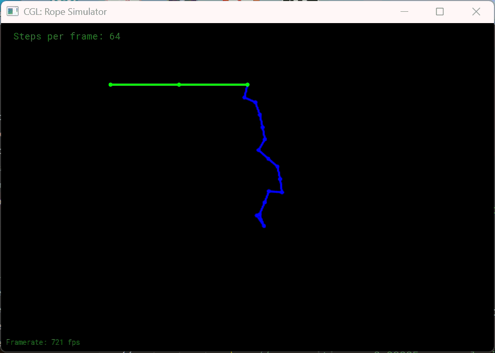

作业8-质点弹簧系统
1 总览
1.1 连接绳子的约束
在 rope.cpp 中, 实现 Rope 类的构造函数。这个构造函数应该可以创建一个新的绳子 (Rope) 对象，该对象从 start 开始，end 结束，包含 num_nodes 个节点。也就是如下图所示：

每个结点都有质量，称为质点；质点之间的线段是一个弹簧。通过创建一系列的质点和弹簧，你就可以创建一个像弹簧一样运动的物体。
pinned_nodes 设置结点的索引。这些索引对应结点的固定属性 (pinned at-tribute) 应该设置为真（他们是静止的）。对于每一个结点，你应该构造一个 Mass对象，并在 Mass 对象的构造函数里设置质量和固定属性。（请仔细阅读代码，确定传递给构造函数的参数）。你应该在连续的两个结点之间创建一个弹簧，设置弹簧两端的结点索引和弹簧系数 \(k\)，请检查构造函数的签名以确定传入的参数。
运行./ropesim。你应该可以看到屏幕上画出绳子，但它不发生运动。
1.2 显式/半隐式欧拉法
胡克定律表示弹簧连接的两个质点之间的力和他们之间的距离成比例。也就是：
施加给弹簧端点 \(a\) 的弹力为
在 Rope::simulateEuler 中, 首先实现胡克定律。遍历所有的弹簧，对弹簧两端的质点施加正确的弹簧力。保证力的方向是正确的！对每个质点，累加所有的弹簧力。
一旦计算出所有的弹簧力，对每个质点应用物理定律：
运行./ropesim。仿真应该就开始运行了，但是只有 3 个结点，看起来不够多。在application.cpp 文件的最上方，你应该可以看到欧拉绳子和 Verlet 绳子的定义。改变两个绳子结点个数（默认为 3 个），比如 16 或者更多。
1.3 显式Verlet
Verlet 是另一种精确求解所有约束的方法。这种方法的优点是只处理仿真中顶点的位置并且保证四阶精度。和欧拉法不同，Verlet 积分按如下的方式来更新下一步位置：
公式中的 \(a(t)\) 也可以仅由位置信息得到，因此说Verlet积分是一种基于位置的积分(Position-Based Intergration)。
在质点弹簧系统中，公式中的加速度 \(a\) 可以由弹簧的弹力公式得到。
除此之外，如果要仿真弹簧系数无限大的弹簧，不用再考虑弹簧力计算加速度 \(a\)，而是用解约束的方法来更新质点位置：只要简单的移动每个质点的位置使得弹簧的长度保持原长。修正向量应该和两个质点之间的位移成比例，方向为一个质点指向另一质点。每个质点应该移动位移的一半。
只要对每个弹簧执行这样的操作，我们就可以得到稳定的仿真。为了使运动更加
平滑，每一帧可能需要更多的仿真次数。
1.4 阻尼
向显示 Verlet 方法积分的胡克定律中加入阻尼。现实中的弹簧不会永远跳动-因为动能会因摩擦而减小。阻尼因子(damping_factor)设置为 0.00005, 加入阻尼之后质点位置更新如下：
1.5 需要修改的函数
本实验需要修改的函数有：
- rope.cpp 中的 Rope::rope(...)
- rope.cpp 中的 void Rope::simulateEuler(...)
- rope.cpp 中的 void Rope::simulateVerlet(...)
2 配置环境
本次作业需要预先安装 OpenGL, Freetype 还有 RandR 这三个库。
在实验文档中介绍在Linux平台可以使用下述指令安装
sudo apt install libglu1−mesa−dev freeglut3−dev mesa-common-dev
sudo apt install xorg-dev #会自动安装libfreetype6-dev
这里在Windows平台基于MSYS2 ucrt64工具链进行安装。更多有关MSYS2的知识请看[[GNU与MSYS2]]
2.1 安装freetype2
打开MSYS2 ucrt64 shell
可以先通过下述指令查找仓库中有哪些freetype的包
pacman -Ss freetype
之后可以使用下述指令安装freetype包
pacman -S mingw-w64-ucrt-x86_64-freetype
执行之后，可以在看到在下述路径
C:\msys64\ucrt64\include\freetype2
有一个文件夹
freetype和一个文件ft2build.h注意最好使用ucrt64的gcc工具包

但会报错
[build] E:\games101\Homework8\Assignment8\CGL\src\osdtext.cpp:5:10: fatal error: ft2build.h: No such file or directory [build] 5 | #include "ft2build.h" [build] | ^~~~~~~~~~~~ [build] compilation terminated. [build] mingw32-make[2]: *** [CGL\src\CMakeFiles\CGL.dir\build.make:196: CGL/src/CMakeFiles/CGL.dir/osdtext.cpp.obj] Error 1 [build] mingw32-make[2]: *** Waiting for unfinished jobs.... [build] mingw32-make[1]: *** [CMakeFiles\Makefile2:260: CGL/src/CMakeFiles/CGL.dir/all] Error 2 [build] mingw32-make: *** [Makefile:135: all] Error 2 [proc] 命令“F:\CMake\bin\cmake.EXE --build e:/games101/Homework8/Assignment8/build --config Debug --target all -j 24 --”已退出，代码为 2
在
CGL/CMakeLists.txt中加上调试代码# 2. 核心调试：打印两个变量（STATUS 级别，输出带--标识，清晰易找）
message(STATUS "【Freetype调试】INCLUDE_DIRS = ${FREETYPE_INCLUDE_DIRS}")
message(STATUS "【Freetype调试】LIBRARIES = ${FREETYPE_LIBRARIES}")
发现
find_package(Freetype REQUIRED)
找到的是anaconda中的freetype
所以只能在这个语句之后手动指定freetype路径
# 修改路径为自己的freetype路径
set(FREETYPE_INCLUDE_DIRS "C:/msys64/ucrt64/include/freetype2")
set(FREETYPE_LIBRARIES "C:/msys64/ucrt64/lib/libfreetype.dll.a")
这样，前面头文件缺失的问题解决了
但是还有新的问题
[build] C:/msys64/ucrt64/bin/../lib/gcc/x86_64-w64-mingw32/13.2.0/../../../../x86_64-w64-mingw32/bin/ld.exe: E:/games101/Homework8/Assignment8/CGL/src/osdtext.cpp:215:(.text+0x65a): undefined reference to `__imp___glewVertexAttribPointer'
在编译时没有链接 GLEW 库，导致编译器找不到
__imp___glewVertexAttribPointer 这个 GLEW 提供的函数实现。我刚开始以为需要安装OpenGL及配套环境来解决，但事实并非如此。
GLEW
GLEW（OpenGL Extension Wrangler Library）是OpenGL 扩展管理库，C/C++ 编写的跨平台开源库，核心解决 OpenGL 的扩展碎片化和版本兼容问题。
现代开发中已逐渐被 GLAD 替代——GLAD 是自动生成的 OpenGL 加载库，体积更小、支持最新 OpenGL 版本（4.6+）、可自定义加载的核心功能 / 扩展，而 GLEW 的更新节奏较慢，对新版 OpenGL 的支持滞后。

多次测试并仔细询问AI发现这里的报错并不是因为GLEW库安装，而是项目自带了 GLEW 子模块（deps/glew），但 CMake 没有把这个子模块生成的 libglew.a 静态库正确链接到 CGL 目标，且代码中缺少 GLEW_STATIC 宏定义，导致动态 / 静态链接不匹配。
- __imp_ 前缀的含义：这个前缀是 Windows 动态链接库（DLL）的导入符号标识。你的代码默认尝试动态链接 GLEW，但项目里生成的是静态库 libglew.a，静态库没有这些动态导入符号，因此链接器报错。
解决方法是可以使用vscdoe的cmake tool插件找到库CGL的CMakeLists.txt，然后在
add_library(CGL STATIC ${CGL_SOURCE} ${CGL_HEADER})
后面紧接着加上
# 核心：告诉GLEW头文件，按静态库方式编译CGL内的OpenGL代码，消除__imp__前缀
target_compile_definitions(CGL PRIVATE GLEW_STATIC)
2.2 安装OpenGL及配套环境
从零开始：在VSCode中配置现代OpenGL开发环境（MinGW + GLFW + GLAD_how develop opengl program with vscode-CSDN博客
按道理来说配置OpenGL开发环境需要安装OpenGL以及配套的库，因此可能需要在msys2 ucrt64中安装下面两个包
ucrt64/mingw-w64-ucrt-x86_64-freeglut 3.4.0-2
Freeglut allows the user to create and manage windows containing OpenGL contexts (mingw32-w64)
ucrt64/mingw-w64-ucrt-x86_64-mesa 23.3.3-1
Open-source implementation of the OpenGL, Vulkan and OpenCL specifications (mingw-w64)
mingw-w64-ucrt-x86_64-freeglut- 作用：GLUT 的开源替代版，负责跨平台窗口创建、输入事件（键盘 / 鼠标）处理和 OpenGL 上下文管理。
- 作业场景：你的作业需要它来创建 OpenGL 渲染窗口，接收用户交互（比如视角控制），是连接代码和显示器的 “窗口桥梁”。
mingw-w64-ucrt-x86_64-mesa - 作用：提供 Mesa（开源 OpenGL 实现） 的核心头文件和基础库，包含
gl.h 等 OpenGL 核心头文件，是所有 OpenGL 开发的基础依赖。- 作业场景：没有它，编译器会找不到 OpenGL 的核心函数定义，无法编译任何 OpenGL 代码。
但是在本项目中并不需要这样做，因为windows似乎自带
"C:\Windows\System32\opengl32.dll",而且实际上项目中的CGL路径已经包括了GLEW和GLFW的源码、头文件，并且用到的opengl函数在头文件中都有声明，且项目代码中并没有用到GLUT，所以不需要再额外配置opengl开发环境。
2.3 配置完成
配置完成后，执行
.\build\ropesim.exe
可以得到

3 编译调试技巧
查看cmake build详细过程的指令
cmake --build build -- VERBOSE=1
4 源码解读
4.1 Application类
4.1.1 核心方法render()
void Application::render() {
//Simulation loops
for (int i = 0; i < config.steps_per_frame; i++) {
ropeEuler->simulateEuler(1 / config.steps_per_frame, config.gravity);
ropeVerlet->simulateVerlet(1 / config.steps_per_frame, config.gravity);
}
// Rendering ropes
Rope *rope;
for (int i = 0; i < 2; i++) {
if (i == 0) {
glColor3f(0.0, 0.0, 1.0);
rope = ropeEuler;
} else {
glColor3f(0.0, 1.0, 0.0);
rope = ropeVerlet;
}
glBegin(GL_POINTS);
for (auto &m : rope->masses) {
Vector2D p = m->position;
glVertex2d(p.x, p.y);
}
glEnd();
glBegin(GL_LINES);
for (auto &s : rope->springs) {
Vector2D p1 = s->m1->position;
Vector2D p2 = s->m2->position;
glVertex2d(p1.x, p1.y);
glVertex2d(p2.x, p2.y);
}
glEnd();
glFlush();
}
}
这个函数负责把两个rope绘制到屏幕上，绘制每一个rope分为绘制Vertex和绘制Line两部分。
绘制Vertex时，首先使用
glBegin(GL_POINTS);
之后读取
rope->masses的每个mass元素m，获取它的m->position，以位置的xy坐标调用glVertex2d()提交顶点位置信息。
绘制Line时。首先使用
glBegin(GL_LINES);
进入OpenGL的立即模式(Immediate Mode)，告诉OpenGL接卸来要传入的顶点数据都按线段(GL_LINES)的规则来绘制。这是固定功能管线（旧版 OpenGL，如 1.x/2.x）的经典用法。。
读取
rope->springs的每个spring元素s，分别获取它的起点m1，终点m2的位置，之后使用glVertex2d()向 OpenGL 提交线段的两个顶点坐标：glVertex2d()是 OpenGL 立即模式的 2D 顶点提交函数，d表示参数为双精度浮点数；结合GL_LINES，这两次调用刚好组成一根弹簧对应的线段。
代码仅负责提交绘制数据，实际显示还需要配合 OpenGL 的视口、投影设置，以及循环后的glEnd();
5 我的实现
5.1 Rope构造函数
这是位于 rope.cpp 中的 Rope::Rope(...)，是Rope类的构造函数。
Rope::Rope(Vector2D start, Vector2D end, int num_nodes, float node_mass, float k, vector<int> pinned_nodes)
{
// TODO (Part 1): Create a rope starting at `start`, ending at `end`, and containing `num_nodes` nodes.
// Comment-in this part when you implement the constructor
for (auto &i : pinned_nodes) {
masses[i]->pinned = true;
}
}
在
rope.h 中定义了Rope类，如下所示class Rope {
public:
Rope(vector<Mass *> &masses, vector<Spring *> &springs)
: masses(masses), springs(springs) {}
Rope(Vector2D start, Vector2D end, int num_nodes, float node_mass, float k,
vector<int> pinned_nodes);
void simulateVerlet(float delta_t, Vector2D gravity);
void simulateEuler(float delta_t, Vector2D gravity);
vector<Mass *> masses;
vector<Spring *> springs;
}; // struct Rope
从中可以看出我们需要在构造函数中实现它两个成员质点数组masses和弹簧数组spings的初始化(这两个数组的类型分别是是
vector<Mass *>和vector<Spring *)Mass类和Spring类的构造函数如下所示：Mass(Vector2D position, float mass, bool pinned)
: start_position(position), position(position), last_position(position),
mass(mass), pinned(pinned) {}
Spring(Mass *a, Mass *b, float k)
: m1(a), m2(b), k(k), rest_length((a->position - b->position).norm()) {}
最终实现如下：
Rope::Rope(Vector2D start, Vector2D end, int num_nodes, float node_mass, float k, vector<int> pinned_nodes)
{
// TODO (Part 1): Create a rope starting at `start`, ending at `end`, and containing `num_nodes` nodes.
masses.emplace_back(new Mass(start, node_mass, false));
double inv_num = 1.0 / num_nodes;
Vector2D delta_position = inv_num * (end - start);
for (int i = 1; i < num_nodes; i++)
{
masses.emplace_back(new Mass(start + i * delta_position, node_mass, false));
springs.emplace_back(new Spring(masses[i - 1], masses[i], k));
}
// Comment-in this part when you implement the constructor
for (auto &i : pinned_nodes)
{
masses[i]->pinned = true;
}
}
5.2 欧拉法
这是位于 rope.cpp 中的 void Rope::simulateEuler(...)函数，负责使用Euler Methord来更新质点。
void Rope::simulateEuler(float delta_t, Vector2D gravity)
{
for (auto &s : springs)
{
// TODO (Part 2): Use Hooke's law to calculate the force on a node
}
for (auto &m : masses)
{
if (!m->pinned)
{
// TODO (Part 2): Add the force due to gravity, then compute the new velocity and position
// TODO (Part 2): Add global damping
}
// Reset all forces on each mass
m->forces = Vector2D(0, 0);
}
}
首先要遍历所有的spring，使用Hooke定理来弹簧施加给每个mass的力。
for (auto &s : springs)
{
// TODO (Part 2): Use Hooke's law to calculate the force on a node
Vector2D m1_m2 = s->m2->position - s->m1->position;
double length = m1_m2.norm();
Vector2D tense = s->k * (length - s->rest_length) * m1_m2 /length;
s->m1->forces += tense;
s->m2->forces += -tense;
}
之后遍历每个mass，如果没有被固定(not pinned)则根据它的受力来更新它的速度，并且更新位置。
for (auto &m : masses)
{
if (!m->pinned)
{
// TODO (Part 2): Add the force due to gravity, then compute the new velocity and position
m->forces += gravity*m->mass;
// TODO (Part 2): Add global damping
//半隐式方法
m->velocity += m->forces / m->mass * delta_t;
m->position += 0.00005 * m->velocity * delta_t;
//显式方法
// m->position += 0.00005 * m->velocity * delta_t;
// m->velocity += m->forces / m->mass * delta_t;
}
// Reset all forces on each mass
m->forces = Vector2D(0, 0);
}
}
我把质点个数改为了16个
使用显式方法(使用更新前的速度来更新位置)
使用半隐式方法(使用更新后的速度来更新位置)
不加阻尼的情况下,使用显式方法:一开始的瞬间能看到蓝色rope非常剧烈地形变,之后就消失了;
使用半隐式方法则蓝色rope不会消失,而是非常鬼畜地运动。

在位置更新公式添加阻尼(系数0.00005)之后(注意这种阻尼方法并不完全正确，具体请见本文最后一节)，蓝色rope消失的问题解决了，显式方法和半隐式方法得到的结果都比较稳定。且rope运动比较缓慢，甚至能看到它缓慢下落的过程。

之后rope的运动和前面不加阻尼类似，不过速度更慢，显得没有那么鬼畜。rope会一直运动而不停止，这说明这种在位置更新公式添加阻尼的方法并不完全正确。
增大质点的质量到100，即运行下述指令
.\build\ropesim.exe -m 100
可以明显看到弹簧被拉的更长。

5.3 Verlet方法
void Rope::simulateVerlet(float delta_t, Vector2D gravity)
{
for (auto &s : springs)
{
// TODO (Part 3): Simulate one timestep of the rope using explicit Verlet （solving constraints)
}
for (auto &m : masses)
{
if (!m->pinned)
{
Vector2D temp_position = m->position;
// TODO (Part 3.1): Set the new position of the rope mass
// TODO (Part 4): Add global Verlet damping
}
}
}
遍历每个弹簧几段质点受力与前面欧拉法相同，只有利用受力更新位置的方式不同。实现代码如下：
for (auto &m : masses)
{
if (!m->pinned)
{
m->forces += gravity*m->mass;
Vector2D temp_position = m->position;
// TODO (Part 3.1): Set the new position of the rope mass
// TODO (Part 4): Add global Verlet damping
m->position += (1-0.00005)*(m->position - m->last_position) + m->forces / m->mass * delta_t * delta_t;
m->last_position = temp_position;
}
// Reset all forces on each mass
m->forces = Vector2D(0, 0);
}
核心公式为
其中\(damping\_factor\)被称为阻尼因子，代码中使用的值为0.00005，阻尼因子越大表明阻尼越大，rope越容易稳定。\((1-damping\_factor)\)被称为阻尼系数。
实现之后运行程序可以看到绿色rope刚开始左右摆动，之后因为阻尼而逐渐停止运动，保持竖直。

5.4 为欧拉方法添加正确的阻尼
如前文所示，在欧拉方法的位置更新公式添加阻尼并不能让蓝色rope最终停止运动。
所以我调整了欧拉方法的阻尼公式，来实现和带阻尼的Verlet方法相同的效果。
//半隐式方法
m->velocity += m->forces / m->mass * delta_t;
m->velocity *= (1 - 0.00005);
m->position += m->velocity * delta_t;
核心在于每次都给
m->velocity自乘阻尼系数。这种阻尼方式与Verlet方法的阻尼方式才是等价的。从结果中可以看到蓝色和绿色rope的运动比较接近。


6 测试
6.1 改变每帧迭代次数
.\build\ropesim.exe -s 1024
利用上述指令运行程序，将steps per frame设置成1024，可以看到蓝色和绿色rope的运动完全相同。这是因为steps per frame越大，仿真越准确，两种方法的差异也就越小。这类似于在计算积分\(\int_{a}^{b}f(x)\mathrm{d}x\) 时使用更小的\(\Delta x\)。

当steps per frame足够小时，比如小于等于16时，仿真过于粗糙导致所有质点都飞出了窗口。屏幕上只剩下了最上端固定的一个质点。
6.2 添加空气阻力
使用欧拉方法，不添加阻尼而是加上一个与速度平方成正比的空气阻力，可以看到最终rope会左右快速震荡，并且震荡幅度逐渐减小，就像拨动尺子之后尺子的震荡一样。
6.3 测试技巧
为了方便录屏，建议修改代码利用空格开控制仿真的开始和暂停。
观察发现Application类继承自Renderer，它有一个方法为keyboard_event()，但是它的父类Renderer用于处理键盘输入的方法为key_event()。因此keyboard_event()并没有发挥作用。所以我们需要对代码进行修改。
首先将application.h中keyboard_event()的声明修改为
void key_event(char key) override;
然后把application.cpp中这个函数keyboard_event()的实现修改为
void Application::key_event(char key) {
printf("Key event: key='%c' (%d)\n", key, key);
switch (key) {
case '-':
if (config.steps_per_frame > 1) {
config.steps_per_frame /= 2;
}
break;
case '=':
config.steps_per_frame *= 2;
break;
case ' ':
begin = !begin;
printf("Simulation %s\n", begin ? "started" : "paused");
break;
}
}
可以看到我们使用了一个新的成员变量begin来控制仿真的开始和结束，因此我们要把它添加到Application类的声明中(in applicaiton.h)
class Application : public Renderer {
......
private:
bool begin;
......
}
在application.cpp中的初始化函数为这个成员变量赋初始值
void Application::init() {
......
begin = false;
}
最后修改application.cpp的渲染函数，添加一个if判断
void Application::render() {
//Simulation loops
if(begin){
for (int i = 0; i < config.steps_per_frame; i++) {
ropeEuler->simulateEuler(1 / config.steps_per_frame, config.gravity);
ropeVerlet->simulateVerlet(1 / config.steps_per_frame, config.gravity);
}
}
......
}
这样就可以通过空格控制仿真的开始和暂停。
在windows 11系统可以使用快捷键
Win Shift S调出截图/录屏工具，在顶部的选项中选择“录像”，选区方式修改为“窗口”，就能很方便地进行录屏，还能导出为gif格式。不过，这样导出的gif只会播放一遍。可以先导出为mp4，之后通过 MP4 到 GIF 转换器 - FreeConvert.com 转化为gif格式，设置播放次数为循环。
或者导出为gif，之后通过 免费 GIF Looper - 在线循环播放 Gif 文件 转化成循环播放的gif格式